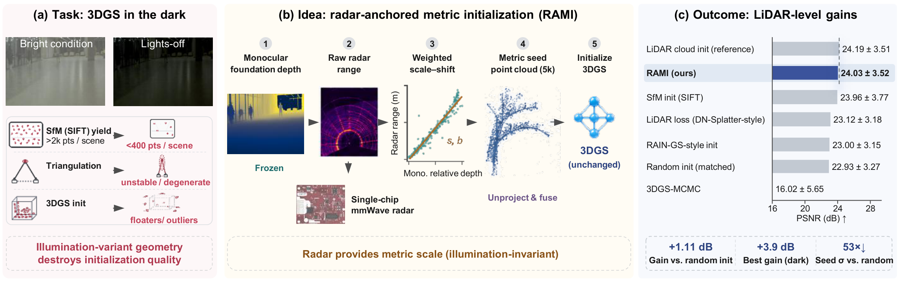
3D Gaussian Splatting (3DGS) is now the standard way for a mobile robot or a headset to synthesize novel views of a space it has walked through. Poor illumination destroys the structure-from-motion (SfM) points that bootstrap 3DGS, and supervising the model with range-sensor depth is not a substitute, because at single-chip angular resolution that loss helps or hurts unpredictably. We present RAMI, a radar-anchored metric initialization that injects sensor geometry at the one stage of 3DGS where it cannot conflict with photometric optimization. RAMI lifts relative depth from a frozen monocular foundation model to metric scale with one per-scene scale–shift fit against single-chip mmWave radar ranges, two scalars that vision cannot recover in the dark, and fuses the result into the seed cloud of an unchanged 3DGS pipeline. Across an illumination-stratified indoor benchmark curated from a public 237-capture corpus, from bright rooms to lights-off, RAMI improves PSNR over matched random initialization by +1.11 dB on average and by up to +3.9 dB in the dark, and it matches a far more expensive LiDAR-cloud reference without using LiDAR at any stage. These results show that for mobile capture in the dark, a coarse range sensor is worth far more as a one-shot metric anchor than as a supervisor, which is what lets a commodity radar stand in for a LiDAR-grade seed.
Held-out novel views swept across each capture. Left to right: ground truth, randomly initialized 3DGS, and RAMI (same poses, same budget, same photometric loss; only the initial point set differs). Dark scenes are gamma-brightened for display.
Drag the divider, or hover over it. Left of the handle is randomly initialized 3DGS, right is RAMI; same poses, same budget, same loss. Start with the crisp still frames to inspect detail, then switch to video to see the gain hold across viewpoints.
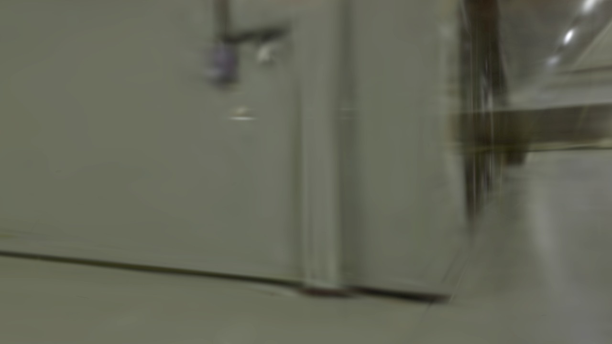
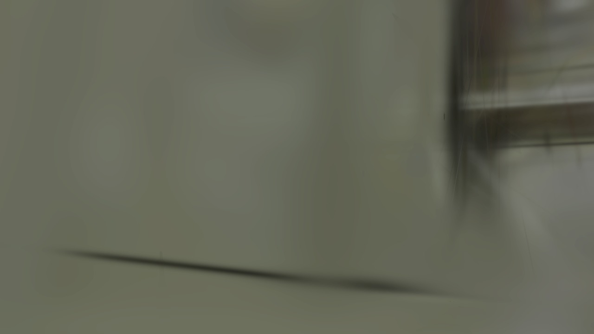
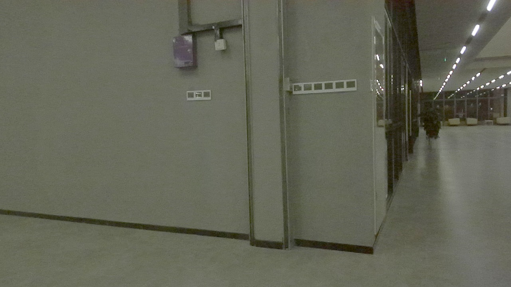
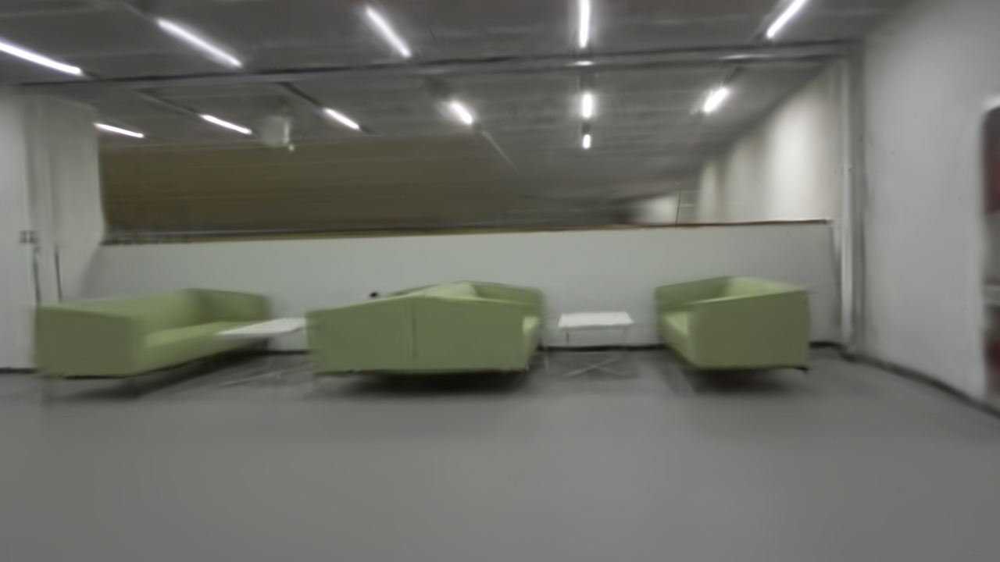
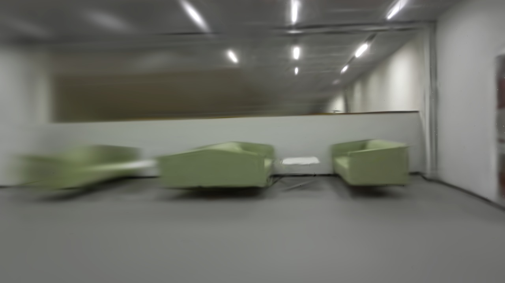
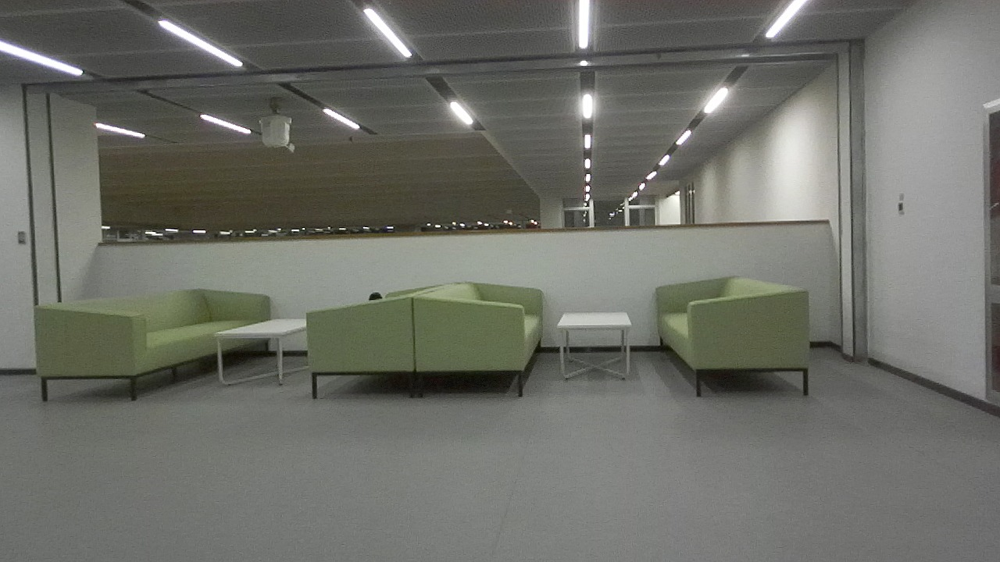
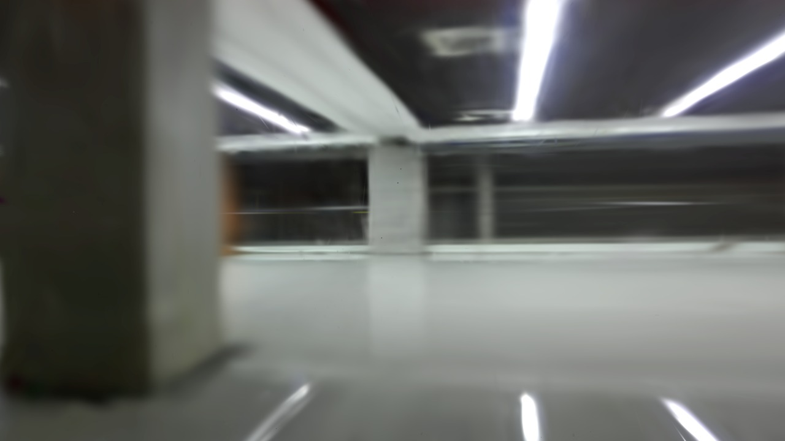
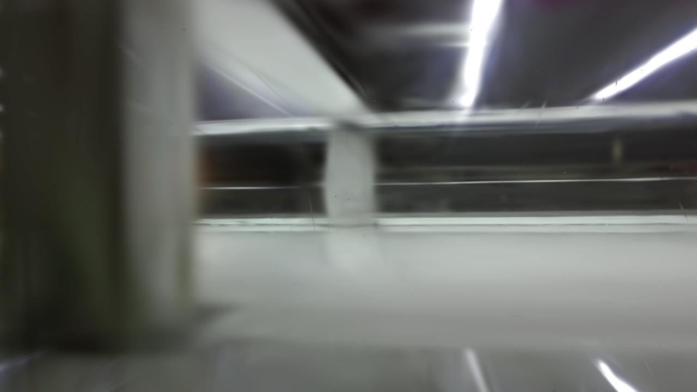
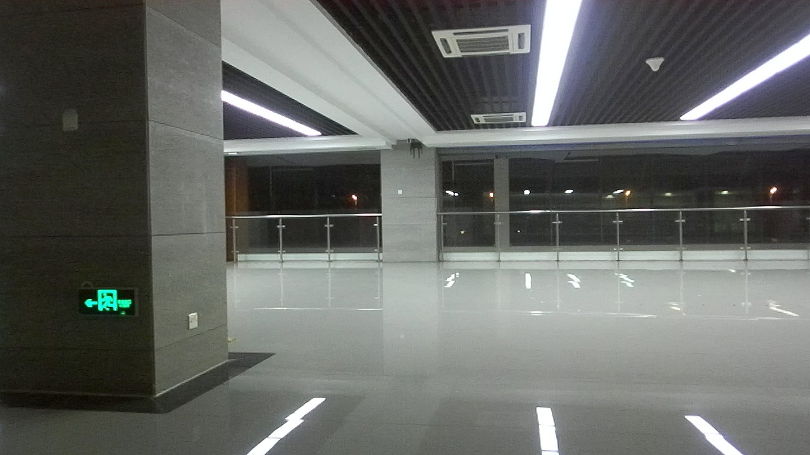
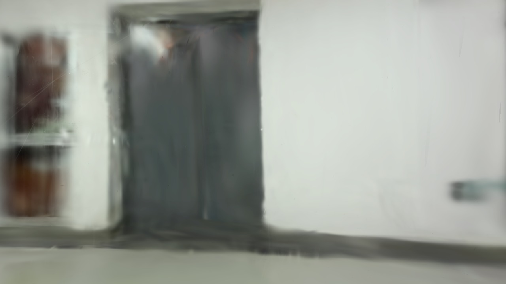
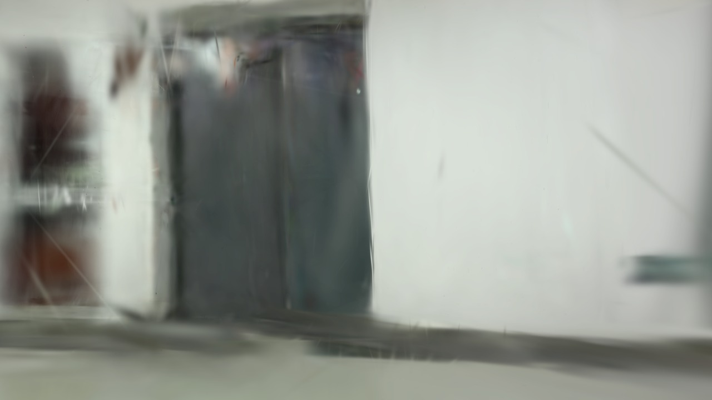
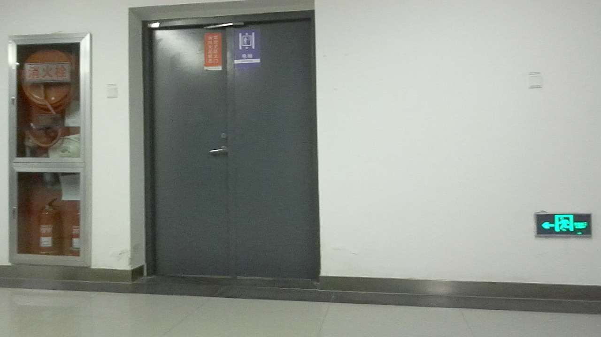
Stills are a single held-out view; videos sweep the held-out trajectory at 0.5× speed. Dark scenes are gamma-brightened for display.
RAMI is deliberately minimal: no new losses, no trainable components, no change to the 3DGS optimizer. Only the seed differs.
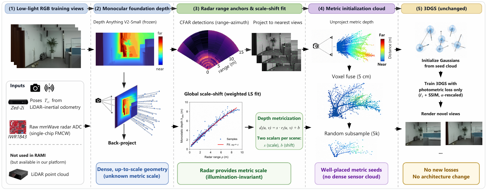
Eleven scenes (dark → bright) against recent pipelines. 3DGS-MCMC collapses on the dark tier, DN-Splatter renders are softer, and SfM initialization degrades where its triangulation yield collapses; RAMI stays sharp throughout.
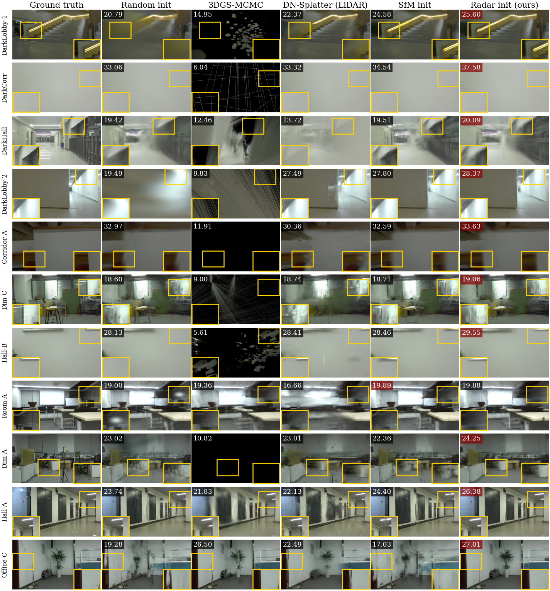
Comparison with recent pipelines on all 23 benchmark scenes (mean over scenes; strict training-frames-only protocol). Bold: best; underline: second best. RAMI leads the dark tier and the worst case, and stays within 0.16 dB of the matched-budget LiDAR-cloud reference on the overall mean.
| Method | PSNR↑ | SSIM↑ | LPIPS↓ | Dark↑ | Dim↑ | Bright↑ | Worst Δ / #fail |
|---|---|---|---|---|---|---|---|
| 3DGS (random init) | 22.93 | 0.757 | 0.549 | 25.88 | 21.17 | 23.86 | — |
| + SLV init (RAIN-GS-style) | 23.00 | 0.759 | 0.554 | 25.75 | 21.23 | 24.06 | −2.49 / 11 |
| + per-view tone curves (Luminance-GS-style) | 20.61 | 0.721 | 0.564 | 22.68 | 19.65 | 20.90 | −11.26 / 22 |
| 3DGS-MCMC | 16.02 | 0.400 | 0.711 | 17.14 | 15.90 | 15.62 | −19.98 / 18 |
| DN-Splatter-style (LiDAR loss) | 23.12 | 0.757 | 0.530 | 26.39 | 21.37 | 23.89 | −1.58 / 10 |
| 3DGS + feed-forward init (DUSt3R/InstantSplat-style) | 23.14 | 0.762 | 0.554 | 26.88 | 20.99 | 24.23 | −2.09 / 13 |
| 3DGS + SfM-points init | 23.96 | 0.773 | 0.529 | 27.15 | 22.15 | 24.86 | −1.01 / 5 |
| 3DGS + LiDAR-cloud init | 24.19 | 0.776 | 0.523 | 27.23 | 22.38 | 25.15 | −0.55 / 2 |
| RAMI (ours, radar init) | 24.03 | 0.774 | 0.526 | 27.26 | 22.27 | 24.84 | −0.22 / 2 |
Full 23-scene benchmark, ablations, seed/scale/anchor-sparsity controls, and the supervision-route negative results are in the paper and supplementary material (available upon acceptance).
@misc{rami2026,
title = {Radar-Anchored Metric Initialization for 3D Gaussian
Splatting under Suboptimal Illumination},
year = {2026}
}